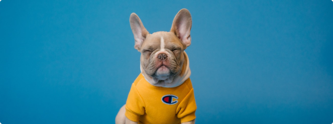
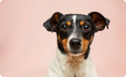
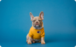

L
luna
Havenese Dog

luna pictures



Descripton
Clina-Lancet Laboratories is a member of the Lancet Group of Laboratories in 14 African countries.
We are ISO 15189:2012 accredited, operating as a 24-hour laboratory in 8 locations in Nigeria
across Lagos,